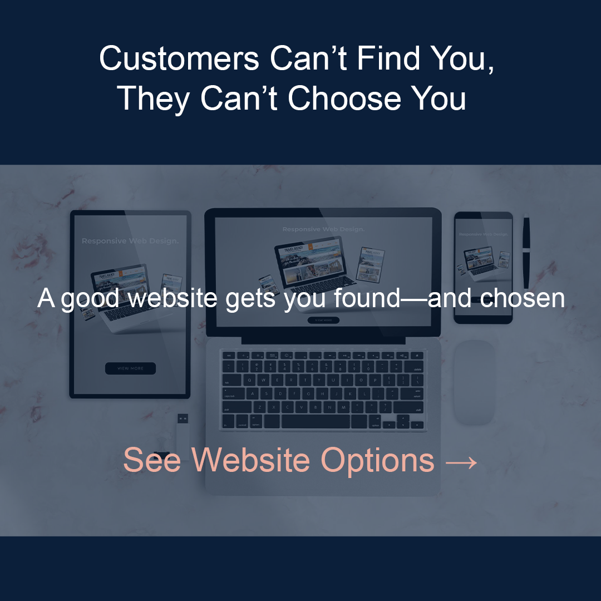

Photoshop Project 3: Social Media Campaign


Missed Call Text Back

Websites
Assets
- cell phone pic
- laptop with analytics pic
- phone key pic
- websites pic
On day one, I decided on a social media campaign for Instagram and Facebook for a digital Consulting Business. On the advice of ChatGPT, I set the file to 1080 by 1080, then used View > Guides > New Guide Layout to ensure everything was centered, and the 80-pixel margins accounted for the Facebook cutoff. The first post is for software that immediately texts a potential customer, collects their information, and then alerts the owner. I created a background layer using Shift+F5 to fill it with navy blue. I added an image of a cell phone and used a mask to create an overlay that blended the image with the background. After this, I added the three text layers with the text tool. The text on the bottom line didn't pop against the background, so I added a box with the rectangle tool and filled it with the same color as my primary background.
The second post is for a free website health audit. I clicked Control + J to make another artboard. At first, I tried to use the background that I copied, but Chat strongly advised me to delete it and do a separate background, so I did. As all media posts are by the same company, I used the same color scheme for all of them. I recreated the background, then pulled a laptop image from the library. This time, instead of using a mask, I created a separate layer for the overlay. I added three separate layers for text, then one for just the arrow.
Day two, I copied the artboard for the free audit post, deleted the layers, and set up a new background layer. This one is for AI receptionist software. I once again copied the artboard, deleted the layers, and started by recreating the background layer, adding the text in three layers: image, text, and overlay. I copied, locked, and set up the background for a website ad.
On the third day, I opened Photoshop, and everything looked weird, oversized, and I couldn't find one of the posts that I knew I'd made. After freaking out, on my friend ChatGPT's advice, I pushed V, clicked the artboard tool, and noticed that my AI Receptionist post was actually behind my text post. Not sure why or how this happened. Using the move tool, I dragged it out from behind the text post. Next, I finished with a website sale post and downloaded all of them as PNG files.